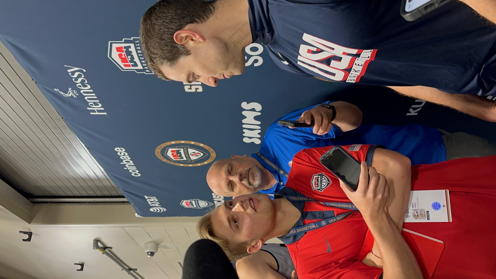

Behind the Olympic Curtain
How Grant Hill assembled the 2024 USA Men’s National Team.
Read Article
Sports Journalist
Hi! My name is Mike Hall, and I am a graduate student at Northwestern University’s Medill School of Journalism pursuing a Master’s degree in Journalism with an emphasis on sports media. I graduated from the University of Wisconsin-Madison in May 2025 with a bachelor’s degree in journalism.
Outside school, I’m entering my fourth year crafting feature stories and profiles for USA Basketball. During that time, I’ve covered the Olympic Games Paris 2024, facilitated communications at the Nike Hoop Summit, and interacted with members of the Naismith Memorial Basketball Hall of Fame.
I also work as a media communications associate for the Chicago Bulls and publish stories for USA Today Sports. While in Madison, I served as sports editor and men’s basketball beat writer for The Badger Herald.
I aspire to tell meaningful hoops stories as a beat writer. When not tuned in to the Chicago White Sox or Bears, you can find me watching classic movies or studying the history of professional basketball.
How Grant Hill assembled the 2024 USA Men’s National Team.
Read ArticleRedefining greatness on an Olympic stage while defying "Father Time."
Read ArticleRecounting one of basketball’s most improbable historical upsets.
Read ArticleHow the national teams automatically clinched a berth for the 2024 Summer Games.
Read ArticleEmbracing a leadership role as 3x3 Men's National Team Managing Director.
Read ArticleThe USA Basketball Coach License program provides education and resources.
Read ArticleAdobe Premiere Pro, Audition, InDesign, WordPress, Canvas, AP Style, Prowly, Presto Suite, WMT.